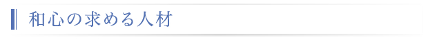

入社時点から下記２つの素養をもっている必要はないですが、入社後の目標として数年以内に習慣化し、以後磨きをかけ高みを目指せる人。その上で「プロジェクトリーダ」又は「高度専門職」を目指していける人材。
普段より「最新IT技術」と「自分の業務」の見識を広めることに努力を惜しまず。解決すべき課題に主体的に取り組み。一歩、一歩、壁を乗り越えていける人材。
自ら変える必要があると考える「事柄」「習慣」「作業方法」を見つけ、改善策を立案し、より良く改善できることを関係者にわかりやすく提案ができる人材。